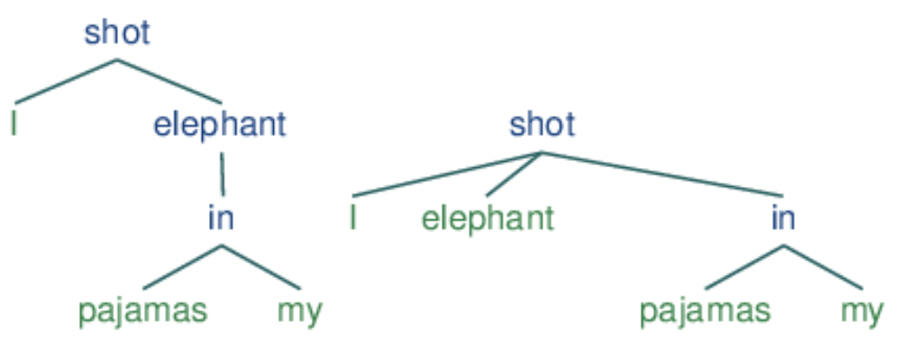

nlp
Contents
5.2. nlp#
Some notes on natural language processing, focused on modern improvements based on deep learning. See also notes in 📌 transformers.
5.2.1. benchmarks#
5.2.1.1. tasks#
Nice repo keeping track of progress here.
tokenization - convert raw text into tokens that can be fed to a model
token/word embeddings - convert tokens to semantic vectors
pos tagging - give each word its part-speech
named entity recognition - classify tokens based on some known annotations (e.g. person, organization)
nested entity recognition - more complex than individual tokens (e.g. “Mary = “Jacob’s brother”)
parse tree extraction - extract out tree of how words operate in a grammar
sentiment classification
text summarization
language modeling (i.e. text generation)
(machine) translation
coreference resolution - correspond simple entities (e.g. “she = Mary”, different names for a protein)
question answering
natural language inference - determining whether a “hypothesis” is true (entailment), false (contradiction), or undetermined (neutral) given a “premise”
topic modeling - unsupervised learning over documents
5.2.1.2. datasets#
open-ended
MMLU: Measuring Massive Multitask Language Understanding (hendrycks, …, song, steinhardt, 2021) - 57 tasks such as elementary math, clinical knowledge, global facts
NLI: allenai natural language instructions (v1: mishra et al. 2022; v2: wang et al. 2022) - 1600+ diverse NLP tasks
Definition which describes the task
For each example: (input text, output (varies), explanation*) - explanation only for some tasks
Big-bench (2022) - crowdsourced diverse (but random) NLP tasks
No task definitions or explanations: the “definition” is instead concatenated to each example’s input
Unveiling Transformers with LEGO: a synthetic reasoning task (zhang, …, bubeck, …, wagner, 2022) - synthetic reasoning task
Large Language Models Still Can’t Plan (A Benchmark for LLMs on Planning and Reasoning about Change)
very popular
SuperGLUE Benchmark (2019)
8 NLU tasks (keeps two hardest from GLUE, marked with ***) extending to coreference resolution and question-answering
BoolQ (Boolean Questions) - answer a yes/no question about a text passage.
CB (CommitmentBank) - given a text and a clause, predict how much the text commits to the clause
COPA (Choice of Plausible Alternatives) - given a premise sentence and two possible choices, the system must determine either the cause or effect of the premise from two possible choices
MultiRC (Multi-sentence Reading Comprehension) - given a context paragraph, a question about that paragraph, and a list of possible answers, the system must predict which answers are true and which are false
ReCoRD (Reading Comprehension with Commonsense Reasoning Dataset) - multiple-choice QA task (news article + Cloze-style multiple-choice question)
\(^\dagger\)RTE (Recognizing Textual Entailment) - determine if a sentence entails a given hypothesis or not.
WiC (Word-in-Context) - word sense disambiguation task cast as binary classification of sentence pairs. Given two text snippets and a polysemous word that appears in both sentences, the task is to determine whether the word is used with the same sense in both sentences
\(^\dagger\)WSC (Winograd Schema Challenge) - coreference resolution task in which examples consist of a sentence with a pronoun and a list of noun phrases from the sentence. The system must determine the correct referent of the pronoun from among the provided choices.
GLUE Benchmark (2019) = General language understanding evaluation
9 NLU tasks including question answering, sentiment analysis, text similarity and textual entailment
single-sentence tasks
CoLA (Corpus of Linguistic Acceptability) - determine if sentence is grammatically correct
SST-2 (Stanford Sentiment Treebank) - determine if the sentence has a positive or negative sentiment
similarity + paraphrase tasks
MRPC (Microsoft Research Paraphrase Corpus) - determine if two sentences are paraphrases from one another.
QQP (Quora Question Pairs)- determine if two questions are semantically equivalent or not.
STS-B (Semantic Textual Similarity Benchmark) - determine the similarity of two sentences with a score from one to five.
Inference Tasks
MNLI (Multi-Genre Natural Language Inference) - determine if a sentence entails, contradicts, or is unrelated to another sentence
QNLI (Question-answering Natural Language Inference) - determine if the answer to a question is contained in a second sentence or not
RTE (Recognizing Textual Entailment) - determine if a sentence entails a given hypothesis or not
WNLI (Winograd Natural Language Inference) - determine if a sentence with an anonymous pronoun and a sentence with this pronoun replaced are entailed or not
more NLI ( natural language inference)
ANLI: Adversarial NLI (nie et al. 2019) - harder examples found by model failures
SNLI Benchmark (bowman et al. 2015) = Stanford Natural Languge Inference - entailment dataset
570k human-annotated sentence pairs where people ask about entailment
FEVER: Fact Extraction and VERification (Thorne et al., 2018)
SciTail (khot et al. 2018) - textual entailment derived from science-question answering
QA
SQuAD 2.0 (Rajpurkar…liang, 2018) - adds 50k unanswerable questions; system must know when it can’t answer
SQuAD (Rajpurkar…liang, 2016) - Stanford Question Answering Dataset (SQuAD) - 100k questions from 23k passages in 500 wikipedia articles
common data sources
WSJ
then twitter
then Wikipedia
5.2.1.3. eval metrics#
perplexity (PP) - inverse probability of the test set, normalized by the number of words (want to minimize it)
\(PP(W_{test}) = P(w_1, ..., w_N)^{-1/N}\)
can think of this as the weighted average branching factor of a language
should only be compared across models w/ same vocab
BLEU
bert-score: https://github.com/Tiiiger/bert_score
5.2.2. individual tasks#
5.2.2.1. tokenization#
Tokenizers - Hugging Face Course
word-based
punctuation splitting
need to do stemming (e.g. “dog” and “dogs”)
unknown token [UNK] for anything not seen - to reduce the amount of this, can get character-based tokens
vocab tends to be too bug
subword-based - break apart meaningful subparts of words, most popular (2022)
many more (e.g. byte-level BPE, used in GPT-2)
character-based - very little prior, generally sequences are too long
vocabulary
sometimes closed, otherwise have unkown words, which we assign its own symbol
can fix training vocab, or just choose the top words and have the rest be unkown
5.2.2.2. token / word embeddings#
embeddings - vectors for representing words
ex. tf-idf - defined as counts of nearby words (big + sparse)
TF * IDF = [ (Number of times term t appears in a document) / (Total number of terms in the document) ] * log(Total number of documents / Number of documents with term t in it).
pointwise mutual info - instead of counts, consider whether 2 words co-occur more than we would have expected by chance
ex. word2vec - short, dense vectors
intuition: train classifier on binary prediction: is word \(w\) likely to show up near this word? (algorithm also called skip-gram)
the weights are the embeddings
word2vec paper I: initial word2vec (mikolov et al. 2013) - simplifies neural language models for efficient training of word embeddings
maximizing the probabilities of words being predicted by their context words (with a DNN)
continuous bag-of-words (CBOW) - predict current word from window (order doesn’t matter)
skipgram - use current word to predict surrounding window – nearby context words weighted more heavily
word2vec paper II: Distributed Representations of Words and Phrases and their Compositionality (mikolov et al. 2013) - word2vec improvements
identify key ngrams and give them their own vecs
ex. GloVe (pennington, socher, & manning, 2014), which is based on ratios of word co-occurrence probs
ex. ELMO (peters…zettlemoyer, 2022) - use LSTM for word embeddings
5.2.2.3. language modeling#
language models - assign probabilities to sequences of words
ex. n-gram model - assigns probs to short sequences of words, known as n-grams
for full sentence, use markov assumption
multi-token decoding for classification - regular beam search will favor shorter results over longer ones on average since a negative log-probability is added at each step, yielding lower (more negative) scores for longer sentences
5.2.2.4. topic modeling#
topic models (e.g. LDA) - apply unsupervised learning on large sets of text to learn sets of associated words
LDA = latent dirichlet allocation
5.2.2.5. interpretable prediction models#
Neural Bag-of-Ngrams (li et al. 2017) - learn embedding vectors for ngrams via deep version of skip-gram
Improving N-gram Language Models with Pre-trained Deep Transformer (wang et al. 2019) - use transformer to generate synthetic data for new n-gram model (language model, doesn’t extend to classification)
Improvements to N-gram Language Model Using Text Generated from Neural Language Model (suzuki et al. 2019) - generate synthetic data from RNNs for new n-gram model
fasttext (jin et al. 2016)
(DirtyCat): Encoding High-Cardinality String Categorical Variables (cerda & varoquax, 2020) - use embedding model to improve string categorical variables
5.2.2.6. grammar / parse-tree exraction#
notes/figures from nltk book ch 8/9
language - set of all grammatical sentences
grammar - formal notation that can be used for “generating” the members of this set
phrases
noun phrases
adjective phrase
structures
constituent structure - words combine with other words to form units which are substitutable
e.g. the fact that we can substitute He for The little bear indicates that the latter sequence is a unit
coordinate structure: if \(v_{1}\) and \(v_{2}\) are both phrases of grammatical category \(X\), then \(v_{1}\) and \(v_{2}\) is also a phrase of category \(X\)
context-free grammar - set of grammar rules that define a gramm
e.g. \(S \to NP\; VP\)
rules can be probabilities (so we search for the most probable parse tree, rather than returning all)
phrase tree

\(\begin{array}{lll}\text { Symbol } & \text { Meaning } & \text { Example } \\ \text { S } & \text { sentence } & \text { the man walked } \\ \text { NP } & \text { noun phrase } & \text { a dog } \\ \text { VP } & \text { verb phrase } & \text { saw a park } \\ \text { PP } & \text { prepositional phrase } & \text { with a telescope } \\ \text { Det } & \text { determiner } & \text { the } \\ \text { N }& \text { noun } & \text { dog } \\ \text { V } & \text { verb } & \text { walked } \\ \text{ P} & \text { preposition } & \text { in }\end{array}\)
note: chunking yields a similar partition of a sequence rather than a tree
algorithms
top-down parsing (e.g. recursive descent parsing) - starts from \(S\) , and keep expanding the grammar rules until finding a match
RecursiveDescentParser is unable to handle left-recursive productions of the form X -> X Y
bottom-up parsing - can be faster; find sequences that correspond to the righthand side of a grammar rule and replace them with the left
ex. shift-reduce parser
backtracking ensures we find a parse if one exists (and can find multiple if we choose)
dependency grammar focuses on how words relate to other words
relation between head (usually tensed verb) and its dependents (rest of the words)

this can also be displayed as a tree

a dependency graph is projective if, when all the words are written in order, the edges can be drawn above the words without crossing
equivalent to saying that a word and all its descendants (dependents and dependents of its dependents, etc.) form a contiguous sequence of words within the sentence
above graph is projective
valencies - sometimes certain things in a class are allowed buothers are not
e.g. “Buster was frightened” ✅ but “Buster saw frightened” :x:
need subcategories of things (e.g. intransitive verb vs transitive verb vs dative verb) to know what symbols are allowed in rules
verbs specifically have complements associated with them – unlike modifiers (like the word “really”), complemetes are not optional and usually not selected in the same way by the head
feature-based grammars - add things to word representations (e.g. plurality) and use these in the grammar rules